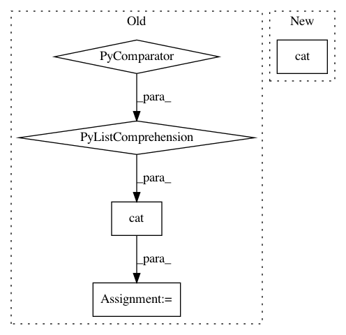

49dc427e2c196a334dc7b173ff317e05f04813e7,tests/concat_many.py,TestConcatMany,forward,#TestConcatMany#,23
Before Change
[nn.Conv2d(inp, out, kernel_size=kernel_size, bias=bias) for i in range(k)]
def forward(self, x):
conv2ds_results = [c(x) for c in self.conv2ds]
x = torch.cat(conv2ds_results, dim=1)
return x
if __name__ == "__main__":
After Change
self.conv2_3 = nn.Conv2d(inp, out, kernel_size=kernel_size, bias=bias)
def forward(self, x):
x = torch.cat([
self.conv2_1(x),
self.conv2_2(x),
self.conv2_3(x)
], dim=1)
return x
if __name__ == "__main__":
In pattern: SUPERPATTERN
Frequency: 3
Non-data size: 5
Instances
Project Name: nerox8664/pytorch2keras
Commit Name: 49dc427e2c196a334dc7b173ff317e05f04813e7
Time: 2018-01-29
Author: nerox8664@gmail.com
File Name: tests/concat_many.py
Class Name: TestConcatMany
Method Name: forward
Project Name: pytorch/examples
Commit Name: 6cf0bdf28d4a814ed54b05badeaa332144a99a4d
Time: 2020-07-01
Author: cs.shenli@gmail.com
File Name: distributed/rpc/pipeline/main.py
Class Name: DistResNet50
Method Name: forward
Project Name: eriklindernoren/PyTorch-YOLOv3
Commit Name: 9b0a0dd6fe7b4ac021d91acc6b4f96b403dd6b67
Time: 2019-04-26
Author: eriklindernoren@live.se
File Name: models.py
Class Name: Darknet
Method Name: forward